주소를 표준 형식으로 바꾸고, 관리하는 시설을 지도로 정리하는 방법을 설명합니다. 앞쪽 요약보기 5장으로 전체를 훑고, 필요할 때 뒤쪽 상세를 찾아 그대로 따라 하시면 됩니다.
주소가 들어가는 업무를 세 가지 방식으로 도와줍니다.
어떤 형태의 주소든 표준 형식으로 바꿉니다. 한 건이든 여러 건이든 방법은 간단합니다.
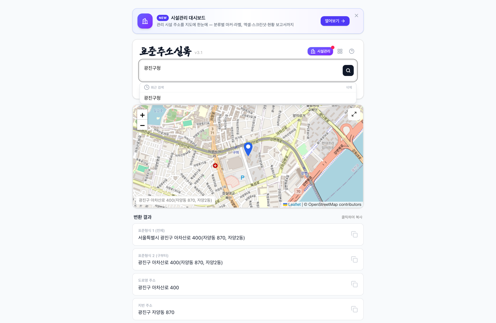
🔍 크게 보기관리하는 시설을 지도에 올려, 넣기 → 지도 → 보고서 순서로 다룹니다.
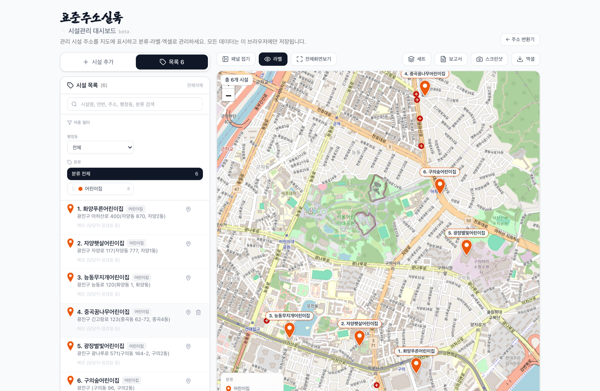
🔍 크게 보기자주 있는 업무와, 그때 볼 상세 장을 정리했습니다. 여기까지가 요약보기입니다.
브라우저를 열고, 주소를 치고, 즐겨찾기에 넣는 세 단계입니다. 한 번만 해두면 다음부터는 클릭 한 번으로 열립니다.
화면 살펴보기 → 한 건 변환 → 여러 건 한 번에 → 결과 저장 순서로 익힙니다. 각 버튼이 무엇을 하는지 하나씩 짚어 드립니다.
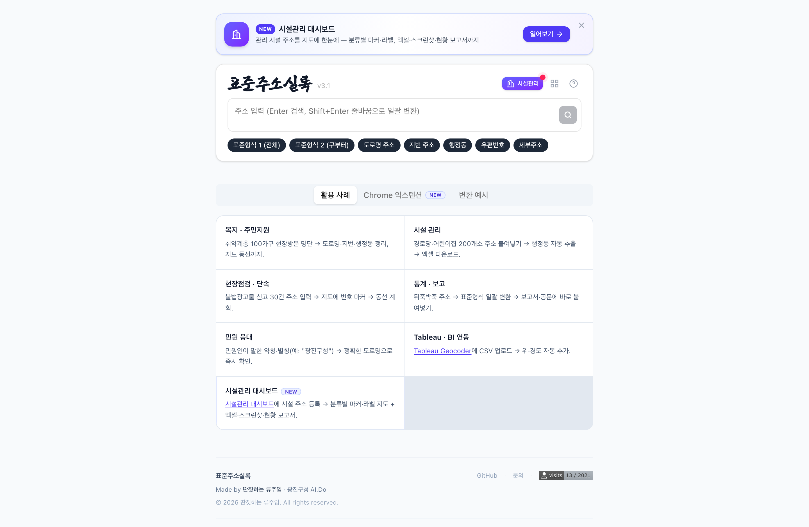
1 2 3 4한 번 검색하면 같은 주소가 형식별로 여러 줄 나옵니다. 필요한 줄을 눌러 복사한 뒤, 공문·엑셀에 붙여넣으면 됩니다.
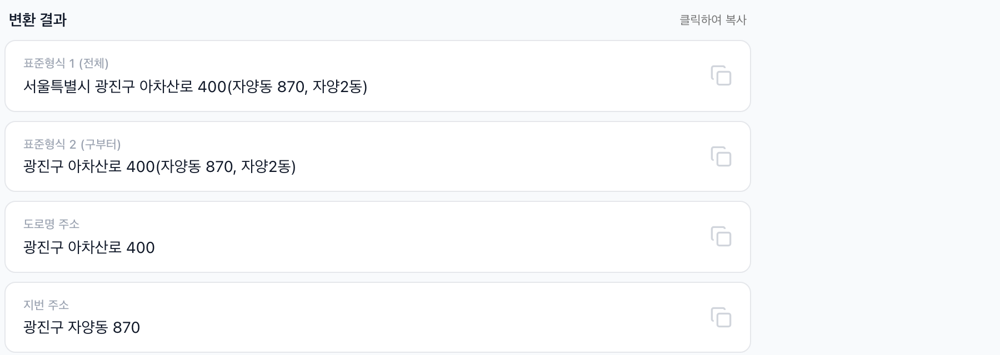
입력칸 아래 버튼을 누르면 그 형식이 켜지거나 꺼집니다. 켜 둔 형식만 결과와 엑셀에 나옵니다.
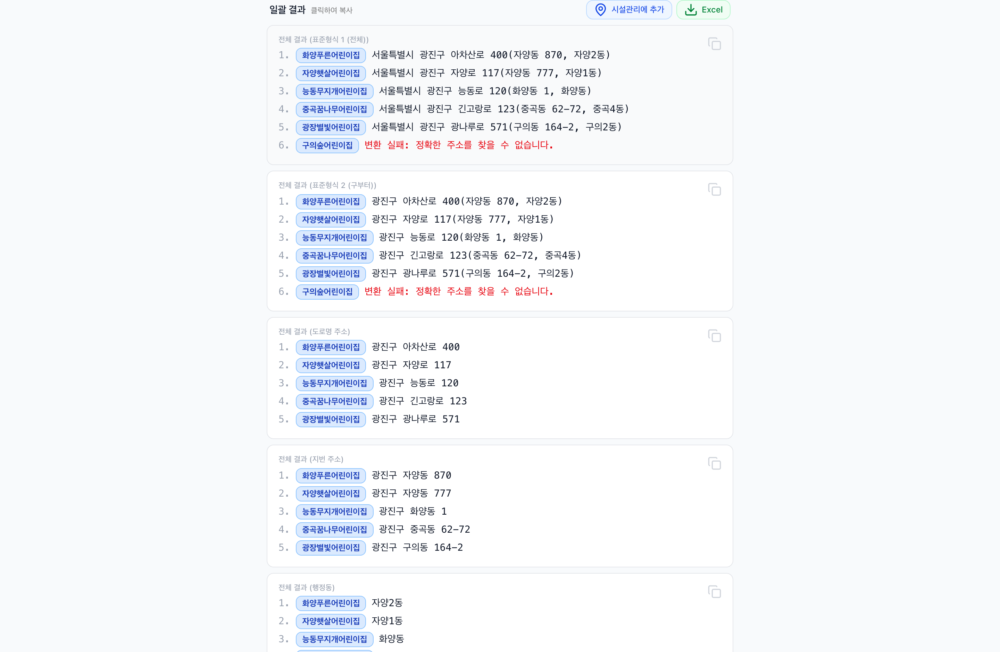
🔍 크게 보기여러 건 결과 오른쪽 위에 단추 두 개가 있습니다.
이번 안내서에서는 어린이집으로 처음부터 끝까지 해봅니다. 경로당·CCTV·불법광고물처럼 위치로 관리하는 모든 시설에 똑같이 쓸 수 있습니다.
갖고 있는 엑셀 표(주소·시설명)를 올리면 지도에 마커로 뜹니다. 행정동별로 걸러 보고, 분류마다 색으로 구분하고, 현황 보고서까지 만들 수 있습니다.
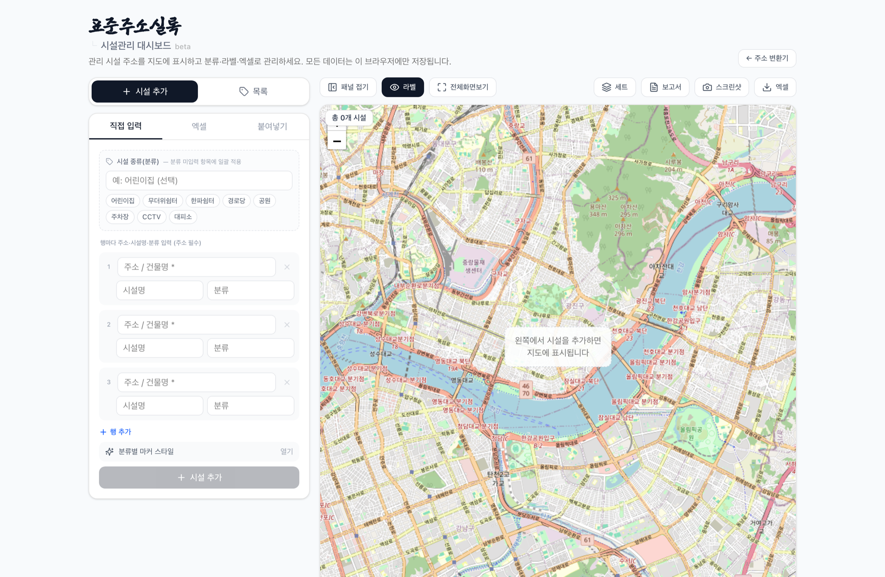
1 2 3 4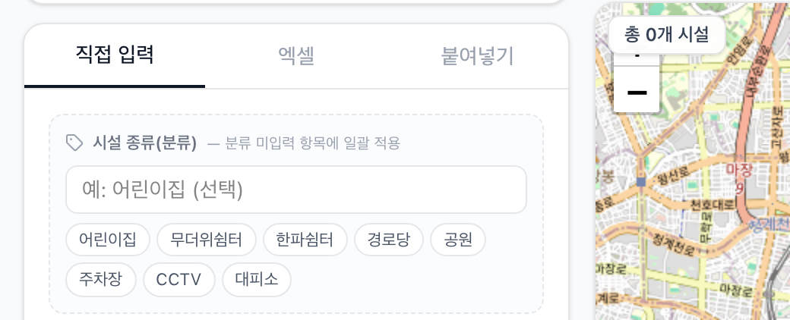
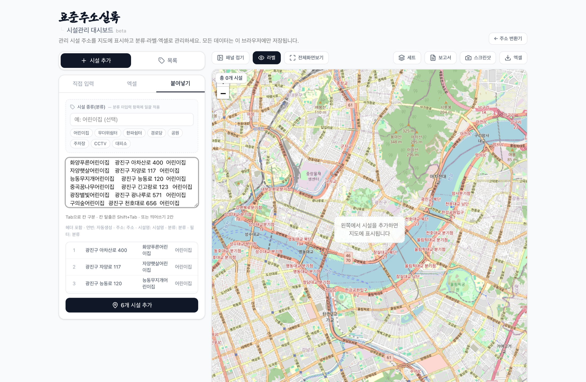
🔍 크게 보기화면 오른쪽 위에 모여 있습니다. 자주 쓰는 것부터 익히면 됩니다.
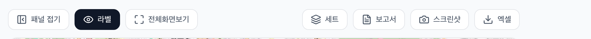
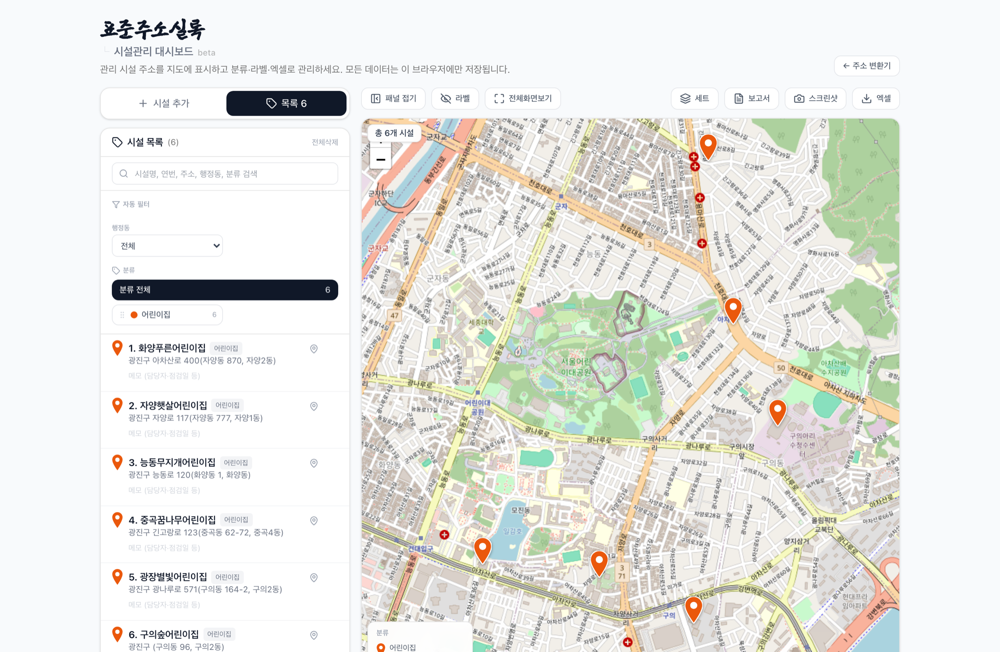
🔍 크게 보기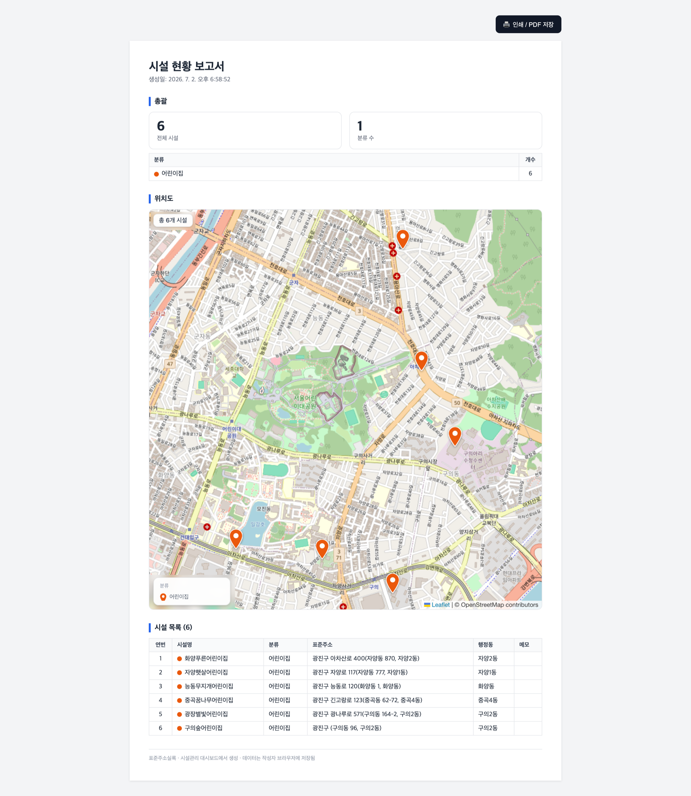
🔍 크게 보기새올·업무포털에서 주소를 드래그하면 그 자리에 변환 카드가 뜹니다. 자주 쓰는 분만 설치하면 되고, 없어도 앞의 기능은 모두 씁니다.
한 번에 다 외우지 않아도 됩니다. 필요한 순간에 해당 장을 찾아 그대로 따라 하면 됩니다. 궁금한 점은 아래로 문의하세요.